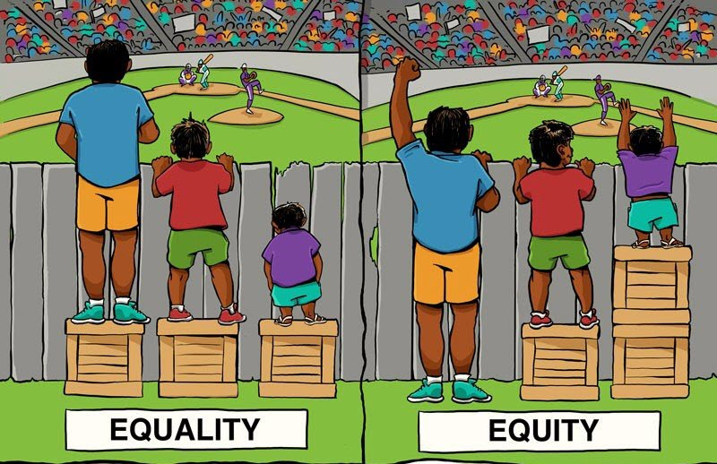

1.7 Core Values: Equity
What is equity? Does equity equal equality?
Equity and equality are similar, but there is a key distinction: under equality everyone is treated in an identical manner, whereas under equity everyone is treated fairly according to their abilities and needs.
The following image nicely illustrates the concept of equity:

Image attribution: Universalincome [cropped] by Leigh Blackall under Attribution 2.0 Generic (CC BY 2.0).